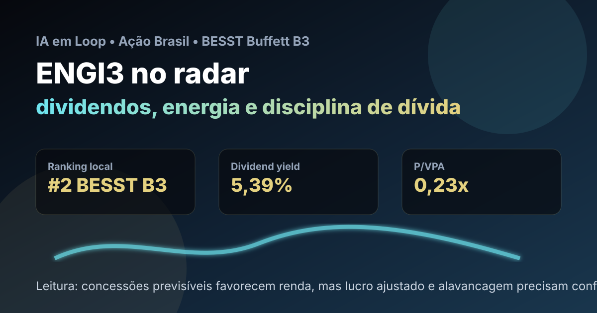

14/09: ENGI3, Energisa e o teste entre dividendos e alavancagem
Energisa aparece entre os nomes fortes do ranking BESST Buffett B3 e entrou em compra real recente. A pergunta central é simples: ENGI3 é uma tese defensiva de renda ou uma elétrica que precisa provar disciplina financeira depois de eventos extraordinários?

ENGI3 combina concessões de energia, histórico de dividendos e valuation contábil baixo. O ponto de atenção é separar ruído contábil de geração recorrente de caixa.
Resposta curta: defensiva, mas não automática
Na base local do ranking BESST Buffett B3 de agosto de 2026, ENGI3 aparece em 2º lugar, com preço-base de R$ 12,05, valor de mercado de aproximadamente R$ 30,30 bilhões, dividend yield de 5,39%, P/VPA de 0,23, P/L de 16,74, 20 anos listados, 18 anos com dividendos e score 64,4.
A leitura positiva vem da combinação de setor regulado, histórico de pagamento e preço contábil descontado. A compra real de agosto registrou 24 ações ENGI3 a R$ 11,48, totalizando R$ 275,52 antes de custos, dentro da carteira BESST & Buffett B3. Isso coloca ENGI3 como tese acompanhada com dinheiro em risco, mas ainda exige controle de alavancagem e resultado recorrente.
O que o resultado recente muda na análise
O 2º trimestre de 2026 trouxe uma mensagem mista. A companhia registrou prejuízo líquido consolidado de R$ 40 milhões, pressionado por efeito contábil extraordinário ligado à venda de ativos de transmissão para a Taesa. Ao mesmo tempo, reportagens de mercado apontaram EBITDA ajustado recorrente de R$ 1,95 bilhão, avanço de cerca de 1% na comparação anual, e queda da alavancagem para 3,1 vezes dívida líquida/EBITDA.
Essa combinação é exatamente o motivo de ENGI3 merecer análise cuidadosa. O lucro contábil do trimestre ficou distorcido por evento não recorrente, enquanto a operação regulada ainda parece resiliente. Para o investidor, a pergunta não é se a manchete foi boa ou ruim; é se a geração recorrente sustenta dividendos sem aumentar risco financeiro.
| Métrica | Valor | Leitura |
|---|---|---|
| Posição no ranking | #2 BESST Buffett B3 | qualidade defensiva com preço atraente |
| Dividend yield local | 5,39% | renda relevante, mas não extrema |
| P/VPA local | 0,23x | desconto contábil alto exige checagem de dívida |
| Compra real em agosto | 24 ações a R$ 11,48 | posição acompanhada, sem concentração excessiva |
| Alavancagem citada no 2T26 | 3,1x DL/EBITDA | melhor que trimestre anterior, ainda ponto-chave |
Por que Energisa importa para uma carteira brasileira
Energia elétrica é um setor que costuma funcionar como peça defensiva: demanda relativamente estável, receitas reguladas e ativos com vida longa. Para uma carteira de ações brasileiras, isso ajuda a equilibrar nomes mais cíclicos de commodities, bancos e construção.
O caso da Energisa adiciona duas camadas. A primeira é positiva: presença em distribuição, transmissão, gás e serviços cria diversificação operacional. A segunda exige cautela: expansão em infraestrutura costuma pedir dívida, e dívida alta reduz a margem de segurança quando juros e regulação apertam.
ENGI3 é uma tese defensiva interessante quando o investidor aceita acompanhar alavancagem, qualidade do lucro e decisões regulatórias. O ranking favorece a ação pelo histórico e pelo valuation; a tese piora se dividendos dependerem mais de eventos pontuais do que de caixa recorrente.
O que favorece e o que ameaça a tese
Favoráveis
• Setor regulado e demanda essencial.
• Bom posicionamento no ranking BESST Buffett B3.
• Histórico longo de dividendos.
• Preço contábil descontado na base local.
• Compra recente permite acompanhamento disciplinado.
Desfavoráveis
• Resultado líquido recente afetado por evento extraordinário.
• Dívida e custo financeiro continuam relevantes.
• Regulação pode limitar retorno e repasse de custos.
• Dividend yield moderado não compensa qualquer deterioração.
• Baixa liquidez relativa de ON pode ampliar ruído de preço.
Checklist para acompanhar daqui em diante
| Ponto | O que monitorar | Se piorar |
|---|---|---|
| Alavancagem | dívida líquida/EBITDA e custo da dívida | dividendos ficam menos seguros |
| Lucro recorrente | resultado ajustado sem eventos extraordinários | ranking pode superestimar qualidade |
| Regulação | revisões tarifárias e decisões da Aneel | margem e retorno sobre capital caem |
| Dividendos | payout, caixa livre e consistência | tese de renda perde força |
| Portfólio | venda de ativos, gás e transmissão | mudança de perfil de risco |
Conclusão
A resposta para a pergunta do post é: ENGI3 pode funcionar como tese defensiva de renda, mas só se a operação recorrente continuar sustentando dívida e dividendos. O ranking mostra preço e histórico favoráveis; a compra recente torna o acompanhamento prático; o resultado do 2T26 lembra que infraestrutura não é renda fixa.
Na régua do IA em Loop, Energisa é uma boa ação para estudar disciplina de carteira: comprar um ativo regulado com margem de segurança, sem ignorar que alavancagem, eventos contábeis e regulação podem mudar rapidamente a leitura de risco.